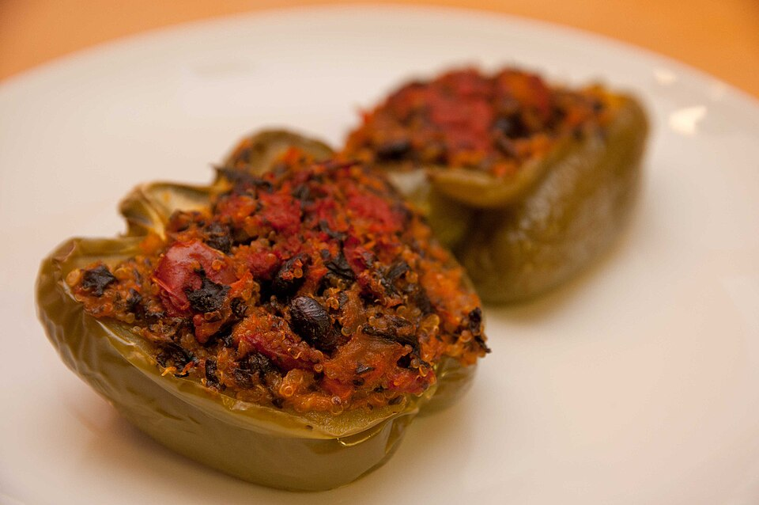

Published September 3, 2024
Quinoa and Herb Stuffed Sweet Peppers
A weeknight bake that uses up the pepper glut
- Peppers
- Main Dish
- American (Mediterranean)
- vegetarian
- meal prep
- freezes well
Halved sweet heirloom peppers filled with herbed quinoa, tomato and feta, then baked until the edges caramelise. Vegetarian, freezer-friendly, and easy to scale for a crowd.

Photo: Mark Bonica · CC BY 2.0 · via Wikimedia Commons · all image credits
Ingredients
- 1 cup quinoa, rinsed well
- 1 3/4 cups vegetable stock or water
- 4 large sweet heirloom peppers, halved through the stem and seeded
- 3 tablespoons olive oil
- 1 yellow onion, finely diced
- 3 garlic cloves, minced
- 2 cups cherry tomatoes, halved (or 1 1/2 cups chopped tomato)
- 1 teaspoon kosher salt, plus more for the peppers
- 1/2 teaspoon smoked paprika
- 1 teaspoon dried oregano
- 1/2 cup crumbled feta or ricotta salata
- 1/4 cup chopped basil or parsley
- 1/4 cup toasted breadcrumbs or panko
- Freshly ground black pepper
Equipment
- 2-quart saucepan
- Large skillet
- 9-by-13-inch baking dish
- Small bowl
Why this recipe works
Sweet peppers are one of the most rewarding crops in a kitchen garden: two or three plants will bury you in fruit by August. Halving and stuffing them is the fastest way to deal with the surplus, and it works with any size or shape of pepper as long as you adjust the bake time.
We use quinoa because it holds moisture and keeps its shape, but the filling is deliberately flexible. The ratio that matters is one part cooked grain to one part soft vegetable, bound loosely with cheese so the filling stays tender instead of turning into a brick.
Heirloom varieties to look for
Jimmy Nardello, Corno di Toro and Sweet Banana are the classic stuffing peppers, thin-walled and sweet. For a meatier, thicker shell and a longer bake, use King of the North or Purple Beauty, both reliable in short seasons.
Method
Cook the quinoa
Bring the quinoa, stock and a pinch of salt to a boil, then cover and simmer for 15 minutes until the liquid is absorbed. Take it off the heat and let it steam, covered, for 5 minutes. Fluff with a fork.
Roast the peppers briefly
Heat the oven to 400 F (200 C). Rub the pepper halves with a little of the olive oil, season inside with salt, and roast cut side up for 10 minutes. This softens the walls so they cook through with the filling.
Build the filling
While the peppers roast, heat the remaining oil in the skillet over medium heat and cook the onion for 6 minutes. Add the garlic and cook 30 seconds, then add the tomatoes, salt, paprika and oregano and cook 6 minutes until the tomatoes collapse and the pan is nearly dry.
Combine
Scrape the tomato mixture into a bowl with the quinoa, feta and herbs. Fold gently, then taste; it should be well seasoned and slightly sharp. Add black pepper.
Fill and top
Spoon the filling into the pepper halves, mounding it slightly. Sprinkle the breadcrumbs over the tops and drizzle with a little more olive oil.
Bake
Return the dish to the oven and bake for 20 to 25 minutes, until the filling is hot through and the breadcrumbs are golden. If the tops brown too fast, cover loosely with foil.
Rest and serve
Rest for 5 minutes before serving with a green salad and a spoonful of yogurt or a squeeze of lemon. The peppers are even better the next day, eaten cold or rewarmed.
Cook's notes
- Rinse quinoa thoroughly or it will taste bitter; the saponin coating is what makes people dislike it.
- Cook the filling until it is quite dry. Wet filling steams the peppers and makes the bottoms soggy.
- Salvage small peppers by stuffing them whole after a 6-minute blanch.
Variations
- Swap the quinoa for cooked rice, farro, or a mix of both.
- Add 1 cup of cooked lentils or 8 ounces of browned crumbled sausage to the filling for a heartier bake.
- Lay the stuffed halves in a pool of tomato sauce before baking, then spoon the sauce over at the table.
Storage
Refrigerate for up to 4 days. Freeze unbaked, tightly wrapped, for up to 3 months; bake from frozen at 400 F for 40 minutes. Baked leftovers reheat well in a covered pan at 350 F for 15 minutes.
How to serve it
2 halves per person. Serve it within the time noted above for the best texture, because heirloom produce is far less forgiving than supermarket vegetables.